P102TA_10_RNA <- readRDS("../objects/02_Puck10_102TA_TCR_RNA_area_121125.Rds")
P102TA_17_RNA <- readRDS("../objects/02_Puck17_102TA_TCR_RNA_area_121125.Rds")
P102TA_33_RNA <- readRDS("../objects/02_Puck33_102TA_TCR_RNA_area_121125.Rds")
P102TA_39_RNA <- readRDS("../objects/02_Puck39_102TA_TCR_RNA_area_121125.Rds")
P107TA_15_RNA <- readRDS("../objects/02_Puck15_107TA_TCR_RNA_area_121125.Rds")
P107TA_18_RNA <- readRDS("../objects/02_Puck18_107TA_TCR_RNA_area_121125.Rds")
P107TA_20_RNA <- readRDS("../objects/02_Puck20_107TA_TCR_RNA_area_121125.Rds")
P108TA_26_RNA <- readRDS("../objects/02_Puck26_108TA_TCR_RNA_area_121125.Rds")
P108TA_29_RNA <- readRDS("../objects/02_Puck29_108TA_TCR_RNA_area_121125.Rds")
P108TA_30_RNA <- readRDS("../objects/02_Puck30_108TA_TCR_RNA_area_121125.Rds")
P108TA_32_RNA <- readRDS("../objects/02_Puck32_108TA_TCR_RNA_area_121125.Rds")
P108TB_06_RNA <- readRDS("../objects/02_Puck06_108TB_TCR_RNA_area_121125.Rds")
P108TB_14_RNA <- readRDS("../objects/02_Puck14_108TB_TCR_RNA_area_121125.Rds")
P109TB_23_RNA <- readRDS("../objects/02_Puck23_109TB_TCR_RNA_area_121125.Rds")
P109TB_34_RNA <- readRDS("../objects/02_Puck34_109TB_TCR_RNA_area_121125.Rds")
P110TA_28_RNA <- readRDS("../objects/02_Puck28_110TA_TCR_RNA_area_121125.Rds")
P110TA_30_RNA <- readRDS("../objects/02_Puck30_110TA_TCR_RNA_area_121125.Rds")
P111TA_32_RNA <- readRDS("../objects/02_Puck32_111TA_TCR_RNA_area_121125.Rds")
P111TA_37_RNA <- readRDS("../objects/02_Puck37_111TA_TCR_RNA_area_121125.Rds")3 Plot cell types spatially
3.1 Libraries
3.2 Open objects with annotated areas
3.3 Assign celltypes
P102TA_10_RNA@meta.data <- P102TA_10_RNA@meta.data %>%
assign_celltypes() %>%
order_celltypes()
P102TA_10_RNA@meta.data %>%
dplyr::count(assignment1) assignment1 n
1 B 392
2 Endothelial 113
3 Fibroblast 2070
4 Myeloid 1466
5 NK 129
6 T 1013
7 Tumor 3437
8 <NA> 33524P102TA_17_RNA@meta.data <- P102TA_17_RNA@meta.data %>%
assign_celltypes() %>%
order_celltypes()
P102TA_17_RNA@meta.data %>%
dplyr::count(assignment1) assignment1 n
1 B 437
2 Endothelial 167
3 Fibroblast 1467
4 Myeloid 850
5 NK 87
6 T 563
7 Tumor 778
8 <NA> 29387P102TA_33_RNA@meta.data <- P102TA_33_RNA@meta.data %>%
assign_celltypes() %>%
order_celltypes()
P102TA_33_RNA@meta.data %>%
dplyr::count(assignment1) assignment1 n
1 B 164
2 Endothelial 133
3 Fibroblast 31
4 Myeloid 1016
5 NK 26
6 T 572
7 Tumor 28482
8 <NA> 11060P102TA_39_RNA@meta.data <- P102TA_39_RNA@meta.data %>%
assign_celltypes() %>%
order_celltypes()
P102TA_39_RNA@meta.data %>%
dplyr::count(assignment1) assignment1 n
1 B 303
2 Endothelial 209
3 Fibroblast 344
4 Myeloid 1082
5 NK 53
6 T 276
7 Tumor 8940
8 <NA> 13346P107TA_15_RNA@meta.data <- P107TA_15_RNA@meta.data %>%
assign_celltypes() %>%
order_celltypes()
P107TA_15_RNA@meta.data %>%
dplyr::count(assignment1) assignment1 n
1 B 516
2 Endothelial 16
3 Myeloid 612
4 NK 5
5 T 167
6 Tumor 18982
7 <NA> 25277P107TA_18_RNA@meta.data <- P107TA_18_RNA@meta.data %>%
assign_celltypes() %>%
order_celltypes()
P107TA_18_RNA@meta.data %>%
dplyr::count(assignment1) assignment1 n
1 B 600
2 Endothelial 8
3 Myeloid 64
4 NK 2
5 T 55
6 Tumor 5970
7 <NA> 28204P107TA_20_RNA@meta.data <- P107TA_20_RNA@meta.data %>%
assign_celltypes() %>%
order_celltypes()
P107TA_20_RNA@meta.data %>%
dplyr::count(assignment1) assignment1 n
1 B 633
2 Endothelial 11
3 Myeloid 220
4 NK 8
5 T 74
6 Tumor 7572
7 <NA> 25727P108TA_26_RNA@meta.data <- P108TA_26_RNA@meta.data %>%
assign_celltypes() %>%
order_celltypes()
P108TA_26_RNA@meta.data %>%
dplyr::count(assignment1) assignment1 n
1 B 330
2 Endothelial 96
3 Fibroblast 153
4 Myeloid 1685
5 NK 37
6 T 285
7 Tumor 30351
8 <NA> 7797P108TA_29_RNA@meta.data <- P108TA_29_RNA@meta.data %>%
assign_celltypes() %>%
order_celltypes()
P108TA_29_RNA@meta.data %>%
dplyr::count(assignment1) assignment1 n
1 B 314
2 Endothelial 250
3 Fibroblast 261
4 Myeloid 1948
5 NK 96
6 T 317
7 Tumor 29932
8 <NA> 15411P108TA_30_RNA@meta.data <- P108TA_30_RNA@meta.data %>%
assign_celltypes() %>%
order_celltypes()
P108TA_30_RNA@meta.data %>%
dplyr::count(assignment1) assignment1 n
1 B 494
2 Endothelial 119
3 Fibroblast 136
4 Myeloid 1644
5 NK 73
6 T 394
7 Tumor 20725
8 <NA> 13350P108TA_32_RNA@meta.data <- P108TA_32_RNA@meta.data %>%
assign_celltypes() %>%
order_celltypes()
P108TA_32_RNA@meta.data %>%
dplyr::count(assignment1) assignment1 n
1 B 863
2 Endothelial 85
3 Fibroblast 312
4 Myeloid 1949
5 NK 139
6 T 694
7 Tumor 27649
8 <NA> 11120P108TB_06_RNA@meta.data <- P108TB_06_RNA@meta.data %>%
assign_celltypes() %>%
order_celltypes()
P108TB_06_RNA@meta.data %>%
dplyr::count(assignment1) assignment1 n
1 B 108
2 Endothelial 172
3 Fibroblast 249
4 Myeloid 788
5 NK 53
6 T 152
7 Tumor 16129
8 <NA> 9120P108TB_14_RNA@meta.data <- P108TB_14_RNA@meta.data %>%
assign_celltypes() %>%
order_celltypes()
P108TB_14_RNA@meta.data %>%
dplyr::count(assignment1) assignment1 n
1 B 116
2 Endothelial 289
3 Fibroblast 393
4 Myeloid 942
5 NK 61
6 T 128
7 Tumor 28823
8 <NA> 16019P109TB_23_RNA@meta.data <- P109TB_23_RNA@meta.data %>%
assign_celltypes() %>%
order_celltypes()
P109TB_23_RNA@meta.data %>%
dplyr::count(assignment1) assignment1 n
1 B 456
2 Endothelial 312
3 Myeloid 350
4 NK 122
5 T 160
6 Tumor 1681
7 <NA> 14319P109TB_34_RNA@meta.data <- P109TB_34_RNA@meta.data %>%
assign_celltypes() %>%
order_celltypes()
P109TB_34_RNA@meta.data %>%
dplyr::count(assignment1) assignment1 n
1 B 395
2 Endothelial 583
3 Myeloid 2338
4 NK 77
5 T 656
6 Tumor 29674
7 <NA> 6498P110TA_28_RNA@meta.data <- P110TA_28_RNA@meta.data %>%
assign_celltypes() %>%
order_celltypes()
P110TA_28_RNA@meta.data %>%
dplyr::count(assignment1) assignment1 n
1 B 273
2 Endothelial 682
3 Myeloid 1483
4 NK 46
5 T 456
6 Tumor 23269
7 <NA> 18181P110TA_30_RNA@meta.data <- P110TA_30_RNA@meta.data %>%
assign_celltypes() %>%
order_celltypes()
P110TA_30_RNA@meta.data %>%
dplyr::count(assignment1) assignment1 n
1 B 163
2 Endothelial 109
3 Myeloid 808
4 NK 27
5 T 211
6 Tumor 29634
7 <NA> 10341P111TA_32_RNA@meta.data <- P111TA_32_RNA@meta.data %>%
assign_celltypes() %>%
order_celltypes()
P111TA_32_RNA@meta.data %>%
dplyr::count(assignment1) assignment1 n
1 B 335
2 Endothelial 979
3 Myeloid 3131
4 NK 69
5 T 87
6 Tumor 26715
7 <NA> 17688P111TA_37_RNA@meta.data <- P111TA_37_RNA@meta.data %>%
assign_celltypes() %>%
order_celltypes()
P111TA_37_RNA@meta.data %>%
dplyr::count(assignment1) assignment1 n
1 B 272
2 Endothelial 667
3 Myeloid 2459
4 NK 28
5 T 116
6 Tumor 22922
7 <NA> 108434 Plot RCTD calls
4.1 P102 Puck10
# Remove empty beads
P102TA_10_RNA <- subset(P102TA_10_RNA, subset = area == "Empty", invert = TRUE)
# Remove non-assigned beads
P102TA_10_assigned <- P102TA_10_RNA@meta.data %>%
filter(!is.na(assignment1))
p10 <- ggplot() +
geom_point(data = arrange(P102TA_10_assigned, assignment1_ord), alpha = 1, aes(x = plot_x, y = plot_y, color = assignment1), size = 0.4) +
celltype_color +
coord_fixed(ratio = 1, xlim = c(0, 5000), ylim = c(0, 5000)) +
theme_void() +
ggtitle("P102TA 10")
p10_sep <- ggplot() +
geom_point(data = arrange(P102TA_10_assigned, assignment1_ord), alpha = 1, aes(x = plot_x, y = plot_y, color = assignment1), size = 0.1) +
celltype_color +
coord_fixed(ratio = 1, xlim = c(0, 5000), ylim = c(0, 5000)) +
theme_void() +
ggtitle("P102TA 10") +
facet_wrap(~assignment1)
p10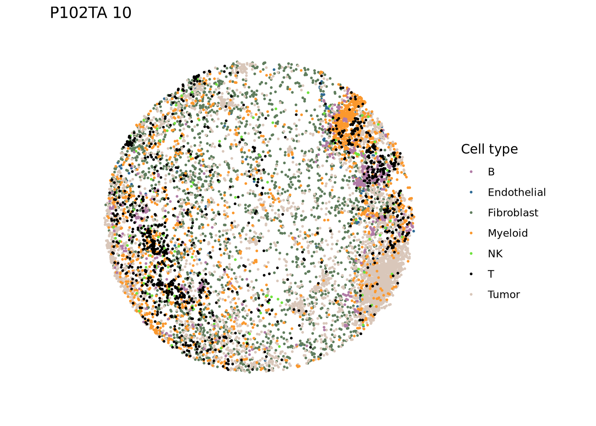
p10_sep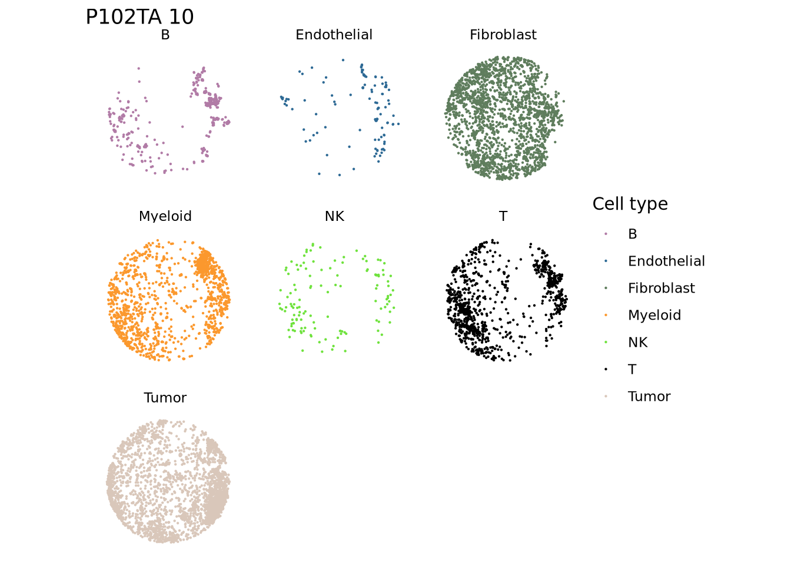
cvd_grid(p10_sep)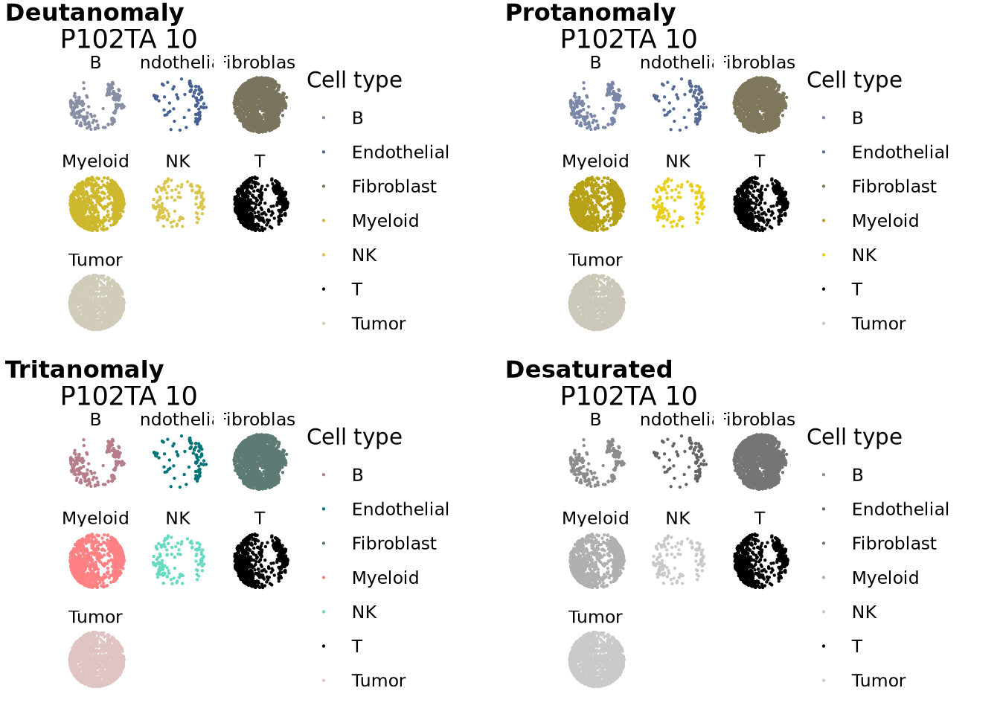
4.2 P102 Puck17
# Remove empty beads
P102TA_17_RNA <- subset(P102TA_17_RNA, subset = area == "Empty", invert = TRUE)Warning: Not validating Seurat objects# Remove non-assigned beads
P102TA_17_assigned <- P102TA_17_RNA@meta.data %>%
filter(!is.na(assignment1))
p17 <- ggplot() +
geom_point(data = arrange(P102TA_17_assigned, assignment1_ord), alpha = 1, aes(x = plot_x, y = plot_y, color = assignment1), size = 0.4) +
celltype_color +
coord_fixed(ratio = 1, xlim = c(0, 5000), ylim = c(0, 5000)) +
theme_void() +
ggtitle("P102TA 17")
p17_sep <- ggplot() +
geom_point(data = arrange(P102TA_17_assigned, assignment1_ord), alpha = 1, aes(x = plot_x, y = plot_y, color = assignment1), size = 0.1) +
celltype_color +
coord_fixed(ratio = 1, xlim = c(0, 5000), ylim = c(0, 5000)) +
theme_void() +
ggtitle("P102TA 17") +
facet_wrap(~assignment1)
p17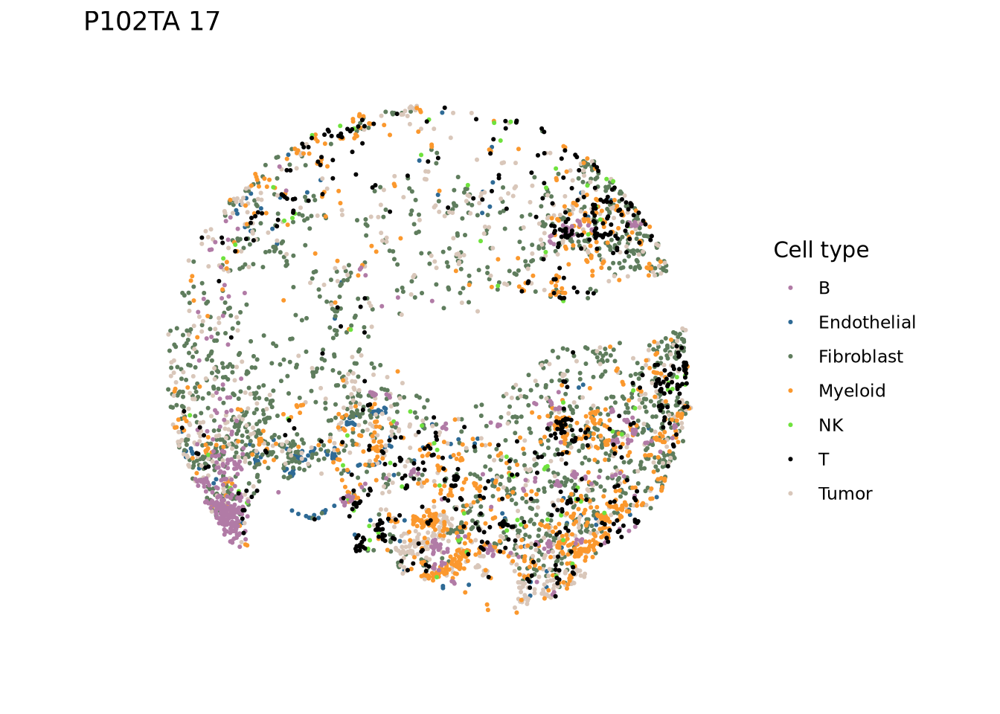
p17_sep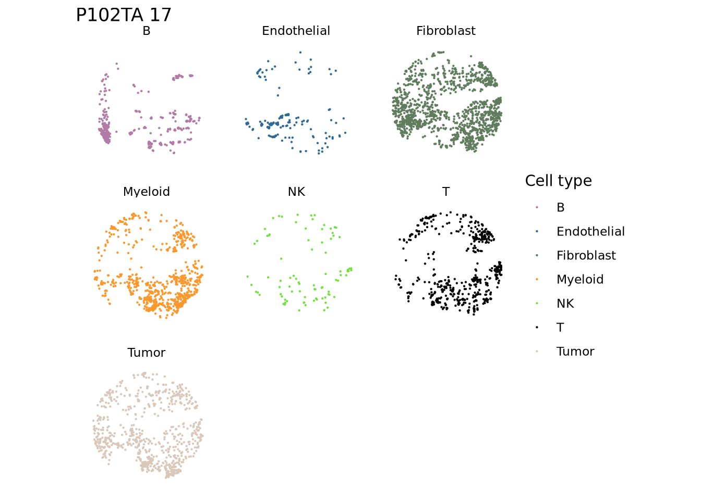
4.3 P102 Puck33
# Remove empty beads
P102TA_33_RNA <- subset(P102TA_33_RNA, subset = area == "Empty", invert = TRUE)Warning: Not validating Seurat objects# Remove non-assigned beads
P102TA_33_assigned <- P102TA_33_RNA@meta.data %>%
filter(!is.na(assignment1))
p33 <- ggplot() +
geom_point(data = arrange(P102TA_33_assigned, assignment1_ord), alpha = 1, aes(x = plot_x, y = plot_y, color = assignment1), size = 0.4) +
celltype_color +
coord_fixed(ratio = 1, xlim = c(0, 5000), ylim = c(0, 5000)) +
theme_void() +
ggtitle("P102TA 33")
p33_sep <- ggplot() +
geom_point(data = arrange(P102TA_33_assigned, assignment1_ord), alpha = 1, aes(x = plot_x, y = plot_y, color = assignment1), size = 0.1) +
celltype_color +
coord_fixed(ratio = 1, xlim = c(0, 5000), ylim = c(0, 5000)) +
theme_void() +
ggtitle("P102TA 33") +
facet_wrap(~assignment1)
p33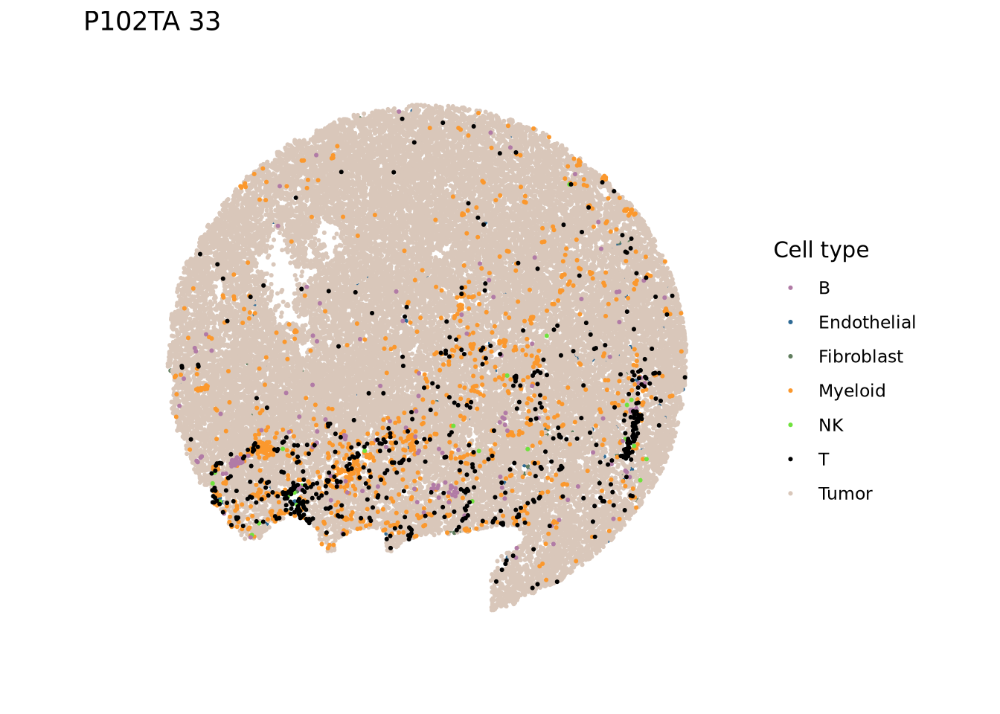
p33_sep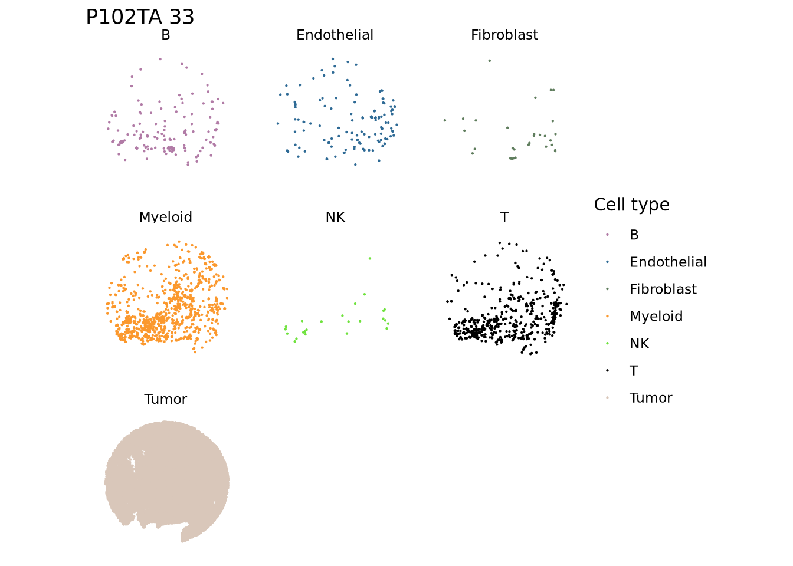
4.4 P102 Puck39
# Remove empty beads
P102TA_39_RNA <- subset(P102TA_39_RNA, subset = area == "Empty", invert = TRUE)Warning: Not validating Seurat objects# Remove non-assigned beads
P102TA_39_assigned <- P102TA_39_RNA@meta.data %>%
filter(!is.na(assignment1))
p39 <- ggplot() +
geom_point(data = arrange(P102TA_39_assigned, assignment1_ord), alpha = 1, aes(x = plot_x, y = plot_y, color = assignment1), size = 0.4) +
celltype_color +
coord_fixed(ratio = 1, xlim = c(0, 5000), ylim = c(0, 5000)) +
theme_void() +
ggtitle("P102TA 39")
p39_sep <- ggplot() +
geom_point(data = arrange(P102TA_39_assigned, assignment1_ord), alpha = 1, aes(x = plot_x, y = plot_y, color = assignment1), size = 0.1) +
celltype_color +
coord_fixed(ratio = 1, xlim = c(0, 5000), ylim = c(0, 5000)) +
theme_void() +
ggtitle("P102TA 39") +
facet_wrap(~assignment1)
p39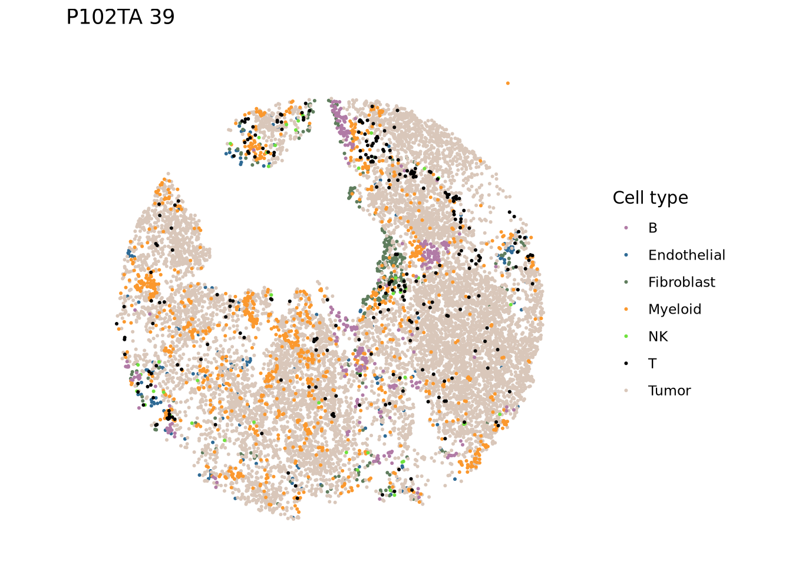
p39_sep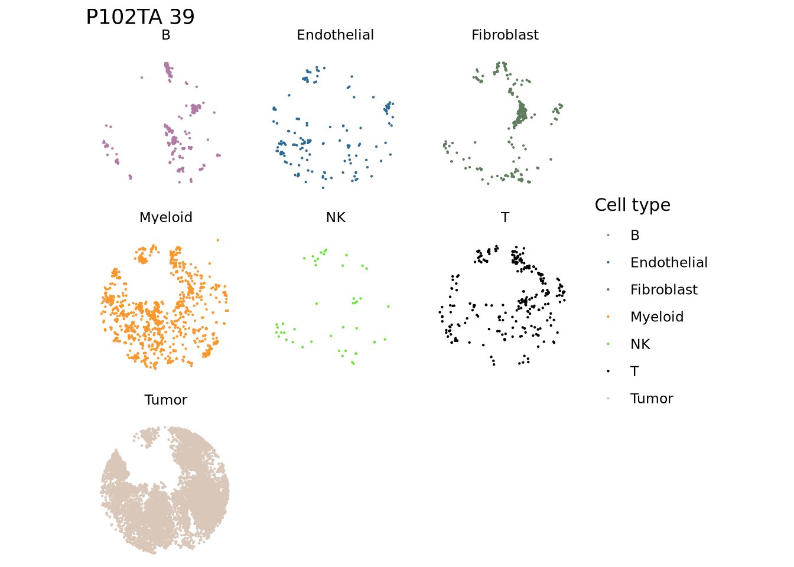
4.5 P107 Puck15
# Remove empty beads
P107TA_15_RNA <- subset(P107TA_15_RNA, subset = area == "Empty", invert = TRUE)Warning: Not validating Seurat objects# Remove non-assigned beads
P107TA_15_assigned <- P107TA_15_RNA@meta.data %>%
filter(!is.na(assignment1))
p15 <- ggplot() +
geom_point(data = arrange(P107TA_15_assigned, assignment1_ord), alpha = 1, aes(x = plot_x, y = plot_y, color = assignment1), size = 0.4) +
celltype_color +
coord_fixed(ratio = 1, xlim = c(0, 5000), ylim = c(0, 5000)) +
theme_void() +
ggtitle("P107TA 15")
p15_sep <- ggplot() +
geom_point(data = arrange(P107TA_15_assigned, assignment1_ord), alpha = 1, aes(x = plot_x, y = plot_y, color = assignment1), size = 0.1) +
celltype_color +
coord_fixed(ratio = 1, xlim = c(0, 5000), ylim = c(0, 5000)) +
theme_void() +
ggtitle("P107TA 15") +
facet_wrap(~assignment1)
p15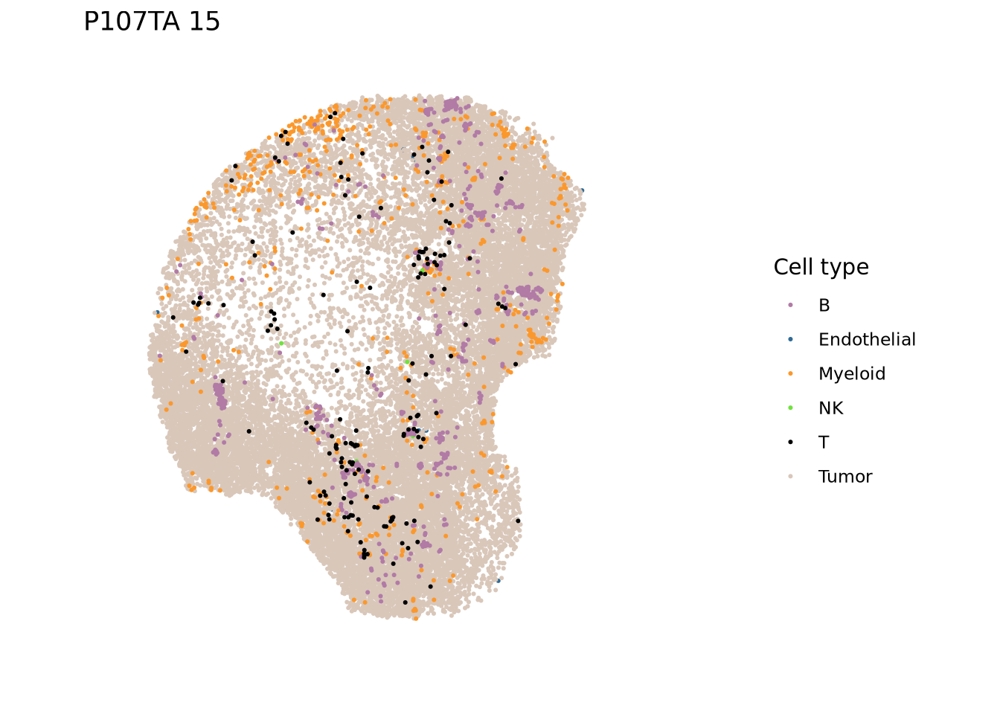
p15_sep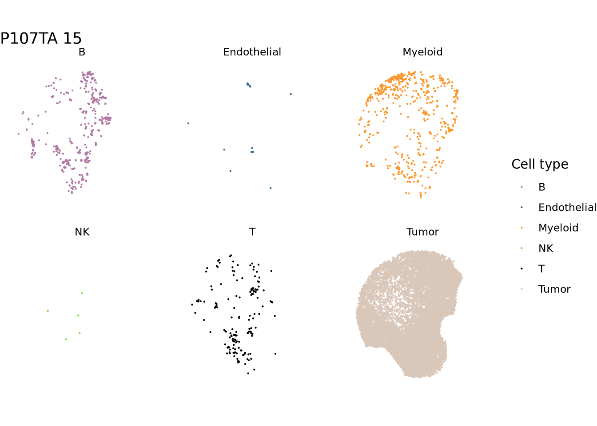
4.6 P107 Puck18
# Remove empty beads
P107TA_18_RNA <- subset(P107TA_18_RNA, subset = area == "Empty", invert = TRUE)Warning: Not validating Seurat objects# Remove non-assigned beads
P107TA_18_assigned <- P107TA_18_RNA@meta.data %>%
filter(!is.na(assignment1))
p18 <- ggplot() +
geom_point(data = arrange(P107TA_18_assigned, assignment1_ord), alpha = 1, aes(x = plot_x, y = plot_y, color = assignment1), size = 0.4) +
celltype_color +
coord_fixed(ratio = 1, xlim = c(0, 5000), ylim = c(0, 5000)) +
theme_void() +
ggtitle("P107TA 18")
p18_sep <- ggplot() +
geom_point(data = arrange(P107TA_18_assigned, assignment1_ord), alpha = 1, aes(x = plot_x, y = plot_y, color = assignment1), size = 0.1) +
celltype_color +
coord_fixed(ratio = 1, xlim = c(0, 5000), ylim = c(0, 5000)) +
theme_void() +
ggtitle("P107TA 18") +
facet_wrap(~assignment1)
p18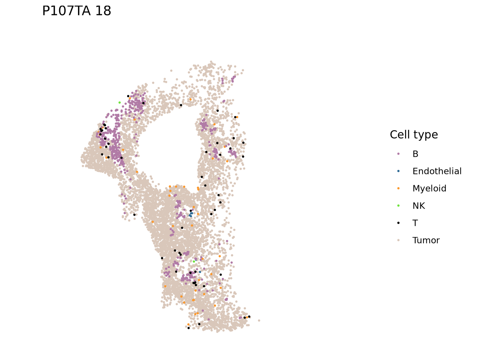
p18_sep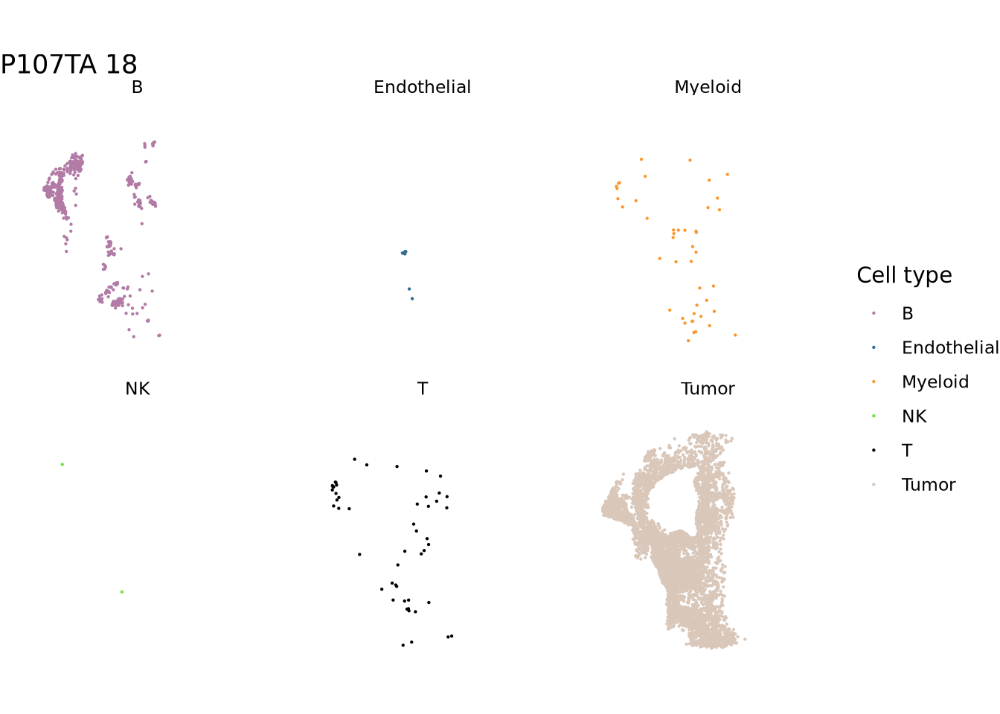
4.7 P107 Puck20
# Remove empty beads
P107TA_20_RNA <- subset(P107TA_20_RNA, subset = area == "Empty", invert = TRUE)Warning: Not validating Seurat objects# Remove non-assigned beads
P107TA_20_assigned <- P107TA_20_RNA@meta.data %>%
filter(!is.na(assignment1))
p20 <- ggplot() +
geom_point(data = arrange(P107TA_20_assigned, assignment1_ord), alpha = 1, aes(x = plot_x, y = plot_y, color = assignment1), size = 0.4) +
celltype_color +
coord_fixed(ratio = 1, xlim = c(0, 5000), ylim = c(0, 5000)) +
theme_void() +
ggtitle("P107TA 20")
p20_sep <- ggplot() +
geom_point(data = arrange(P107TA_20_assigned, assignment1_ord), alpha = 1, aes(x = plot_x, y = plot_y, color = assignment1), size = 0.1) +
celltype_color +
coord_fixed(ratio = 1, xlim = c(0, 5000), ylim = c(0, 5000)) +
theme_void() +
ggtitle("P107TA 20") +
facet_wrap(~assignment1)
p20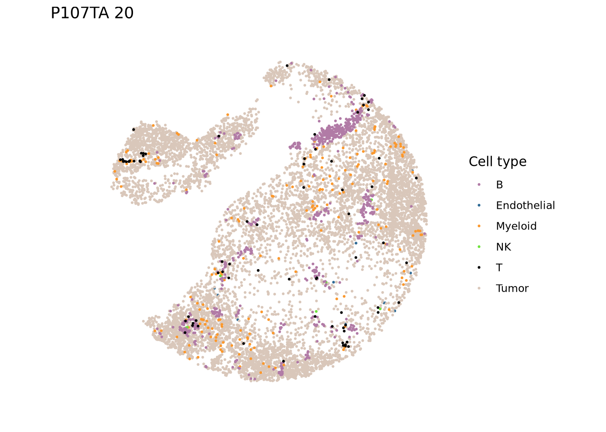
p20_sep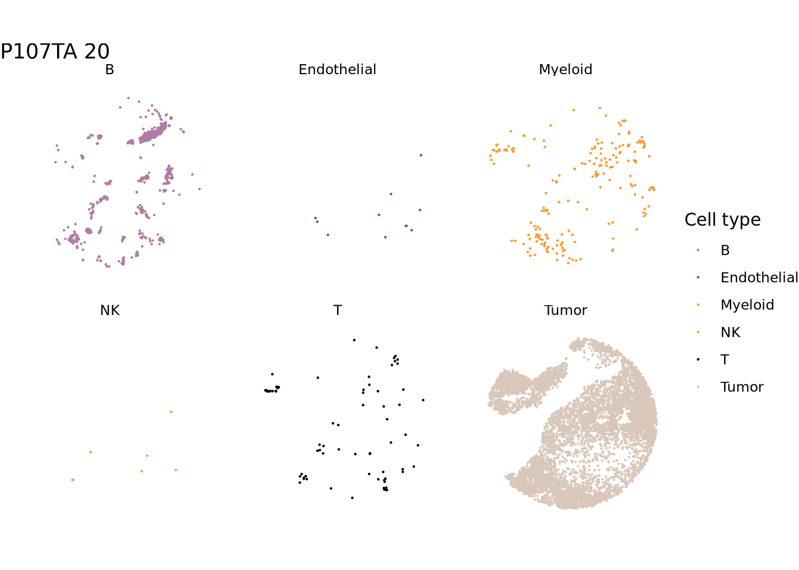
4.8 P108 Puck26
# Remove empty beads
P108TA_26_RNA <- subset(P108TA_26_RNA, subset = area == "Empty", invert = TRUE)Warning: Not validating Seurat objects# Remove non-assigned beads
P108TA_26_assigned <- P108TA_26_RNA@meta.data %>%
filter(!is.na(assignment1))
p26 <- ggplot() +
geom_point(data = arrange(P108TA_26_assigned, assignment1_ord), alpha = 1, aes(x = plot_x, y = plot_y, color = assignment1), size = 0.4) +
celltype_color +
coord_fixed(ratio = 1, xlim = c(0, 5000), ylim = c(0, 5000)) +
theme_void() +
ggtitle("P108TA 26")
p26_sep <- ggplot() +
geom_point(data = arrange(P108TA_26_assigned, assignment1_ord), alpha = 1, aes(x = plot_x, y = plot_y, color = assignment1), size = 0.1) +
celltype_color +
coord_fixed(ratio = 1, xlim = c(0, 5000), ylim = c(0, 5000)) +
theme_void() +
ggtitle("P108TA 26") +
facet_wrap(~assignment1)
p26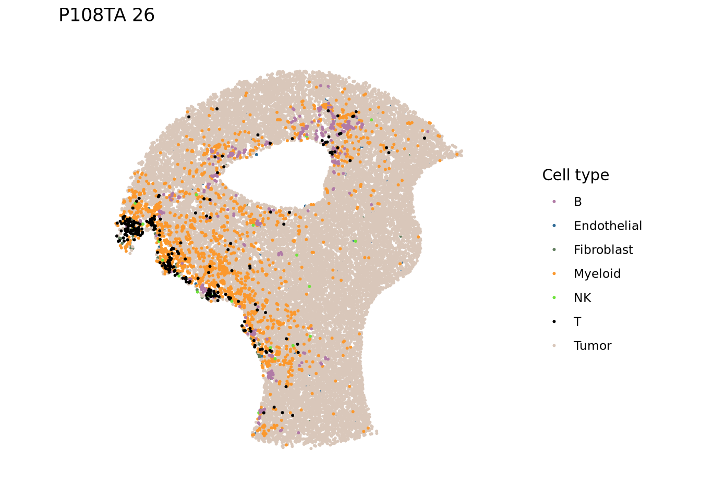
p26_sep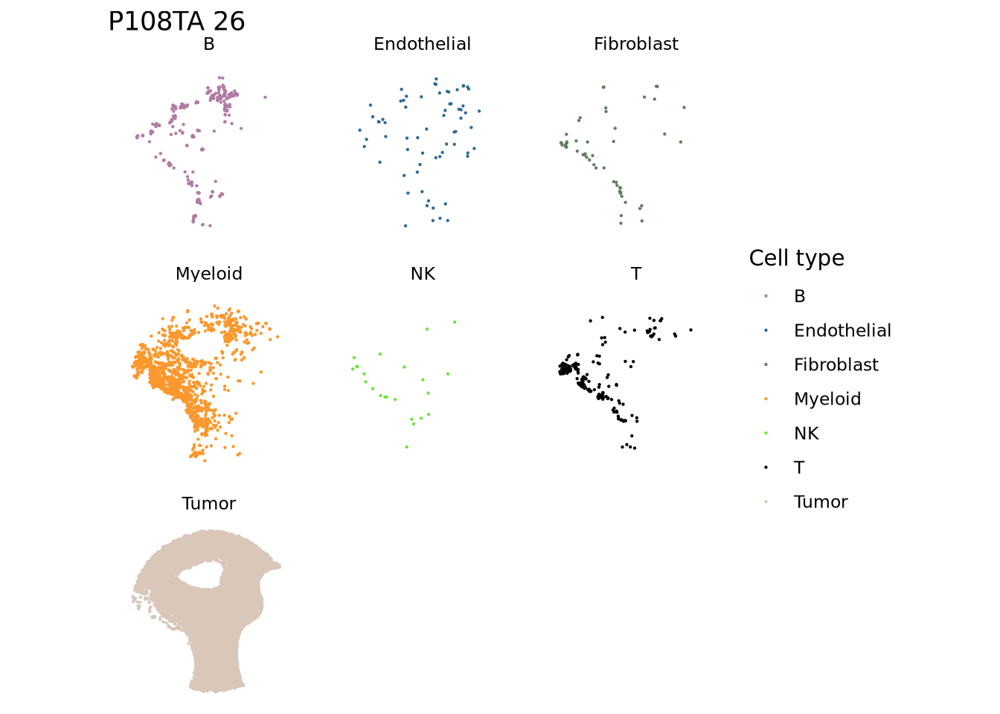
4.9 P108 Puck29
# Remove empty beads
P108TA_29_RNA <- subset(P108TA_29_RNA, subset = area == "Empty", invert = TRUE)Warning: Not validating Seurat objects# Remove non-assigned beads
P108TA_29_assigned <- P108TA_29_RNA@meta.data %>%
filter(!is.na(assignment1))
p29 <- ggplot() +
geom_point(data = arrange(P108TA_29_assigned, assignment1_ord), alpha = 1, aes(x = plot_x, y = plot_y, color = assignment1), size = 0.4) +
celltype_color +
coord_fixed(ratio = 1, xlim = c(0, 5000), ylim = c(0, 5000)) +
theme_void() +
ggtitle("P108TA 29")
p29_sep <- ggplot() +
geom_point(data = arrange(P108TA_29_assigned, assignment1_ord), alpha = 1, aes(x = plot_x, y = plot_y, color = assignment1), size = 0.1) +
celltype_color +
coord_fixed(ratio = 1, xlim = c(0, 5000), ylim = c(0, 5000)) +
theme_void() +
ggtitle("P108TA 29") +
facet_wrap(~assignment1)
p29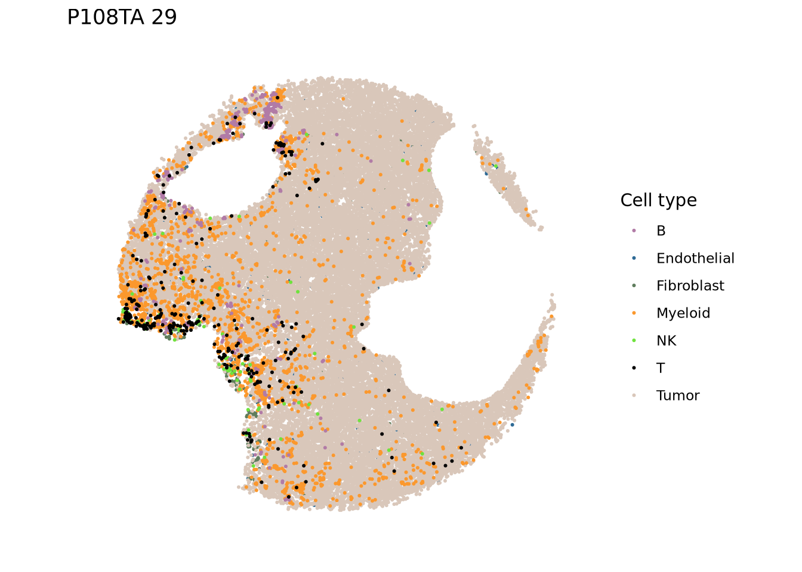
p29_sep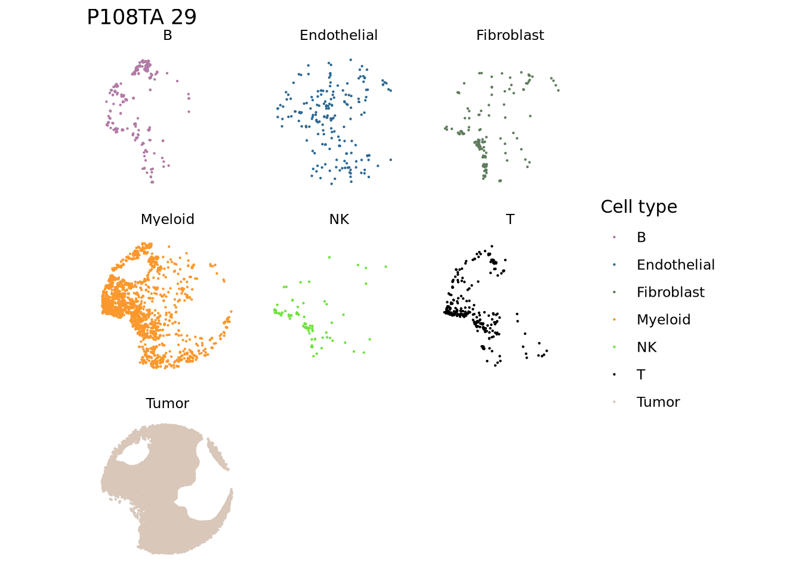
4.10 P108 Puck30
# Remove empty beads
P108TA_30_RNA <- subset(P108TA_30_RNA, subset = area == "Empty", invert = TRUE)Warning: Not validating Seurat objects# Remove non-assigned beads
P108TA_30_assigned <- P108TA_30_RNA@meta.data %>%
filter(!is.na(assignment1))
p30 <- ggplot() +
geom_point(data = arrange(P108TA_30_assigned, assignment1_ord), alpha = 1, aes(x = plot_x, y = plot_y, color = assignment1), size = 0.4) +
celltype_color +
coord_fixed(ratio = 1, xlim = c(0, 5000), ylim = c(0, 5000)) +
theme_void() +
ggtitle("P108TA 30")
p30_sep <- ggplot() +
geom_point(data = arrange(P108TA_30_assigned, assignment1_ord), alpha = 1, aes(x = plot_x, y = plot_y, color = assignment1), size = 0.1) +
celltype_color +
coord_fixed(ratio = 1, xlim = c(0, 5000), ylim = c(0, 5000)) +
theme_void() +
ggtitle("P108TA 30") +
facet_wrap(~assignment1)
p30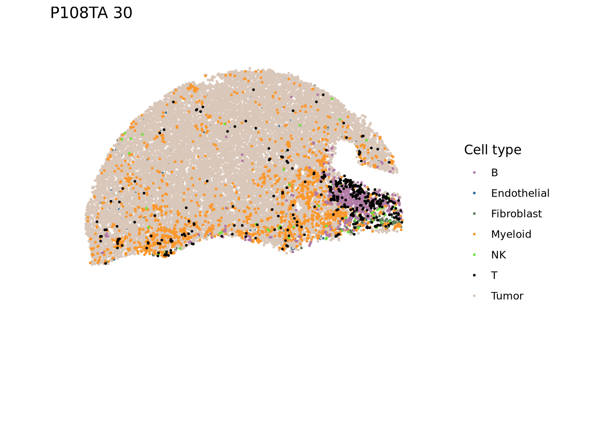
p30_sep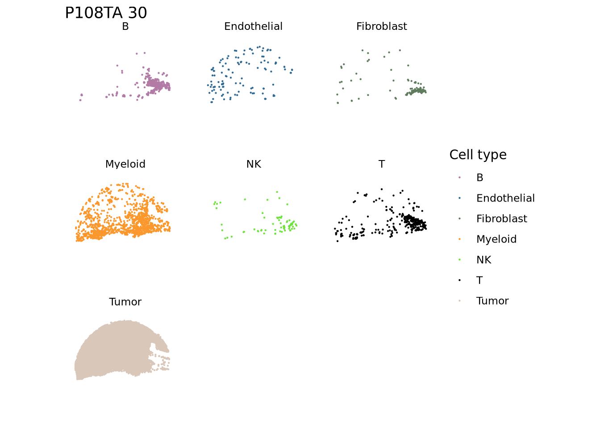
4.11 P108 Puck32
# Remove empty beads
P108TA_32_RNA <- subset(P108TA_32_RNA, subset = area == "Empty", invert = TRUE)Warning: Not validating Seurat objects# Remove non-assigned beads
P108TA_32_assigned <- P108TA_32_RNA@meta.data %>%
filter(!is.na(assignment1))
p32 <- ggplot() +
geom_point(data = arrange(P108TA_32_assigned, assignment1_ord), alpha = 1, aes(x = plot_x, y = plot_y, color = assignment1), size = 0.4) +
celltype_color +
coord_fixed(ratio = 1, xlim = c(0, 5000), ylim = c(0, 5000)) +
theme_void() +
ggtitle("P108TA 32")
p32_sep <- ggplot() +
geom_point(data = arrange(P108TA_32_assigned, assignment1_ord), alpha = 1, aes(x = plot_x, y = plot_y, color = assignment1), size = 0.1) +
celltype_color +
coord_fixed(ratio = 1, xlim = c(0, 5000), ylim = c(0, 5000)) +
theme_void() +
ggtitle("P108TA 32") +
facet_wrap(~assignment1)
p32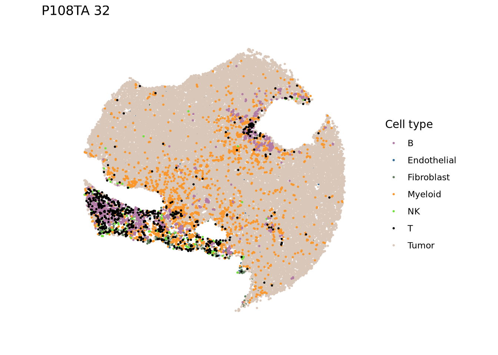
p32_sep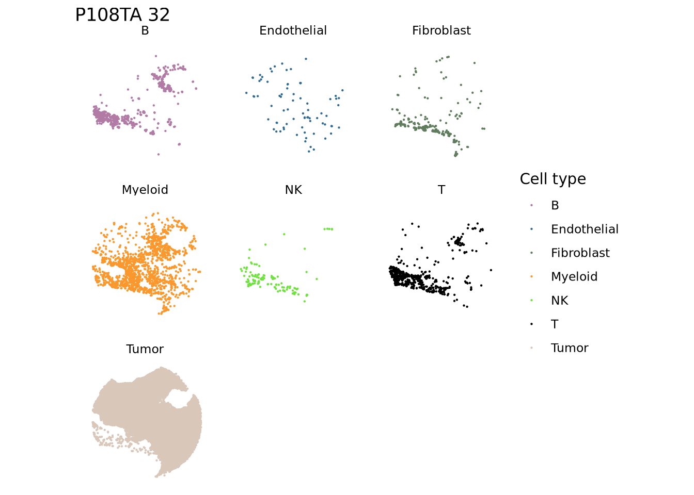
4.12 P108 Puck06
# Remove empty beads
P108TB_06_RNA <- subset(P108TB_06_RNA, subset = area == "Empty", invert = TRUE)Warning: Not validating Seurat objects# Remove non-assigned beads
P108TB_06_assigned <- P108TB_06_RNA@meta.data %>%
filter(!is.na(assignment1))
p06 <- ggplot() +
geom_point(data = arrange(P108TB_06_assigned, assignment1_ord), alpha = 1, aes(x = plot_x, y = plot_y, color = assignment1), size = 0.4) +
celltype_color +
coord_fixed(ratio = 1, xlim = c(0, 5000), ylim = c(0, 5000)) +
theme_void() +
ggtitle("P108TB 06")
p06_sep <- ggplot() +
geom_point(data = arrange(P108TB_06_assigned, assignment1_ord), alpha = 1, aes(x = plot_x, y = plot_y, color = assignment1), size = 0.1) +
celltype_color +
coord_fixed(ratio = 1, xlim = c(0, 5000), ylim = c(0, 5000)) +
theme_void() +
ggtitle("P108TB 06") +
facet_wrap(~assignment1)
p06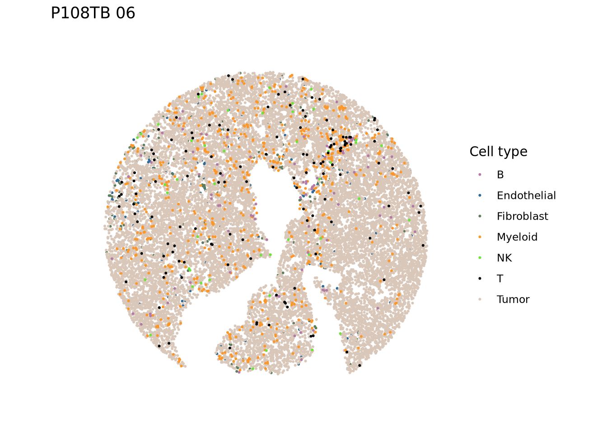
p06_sep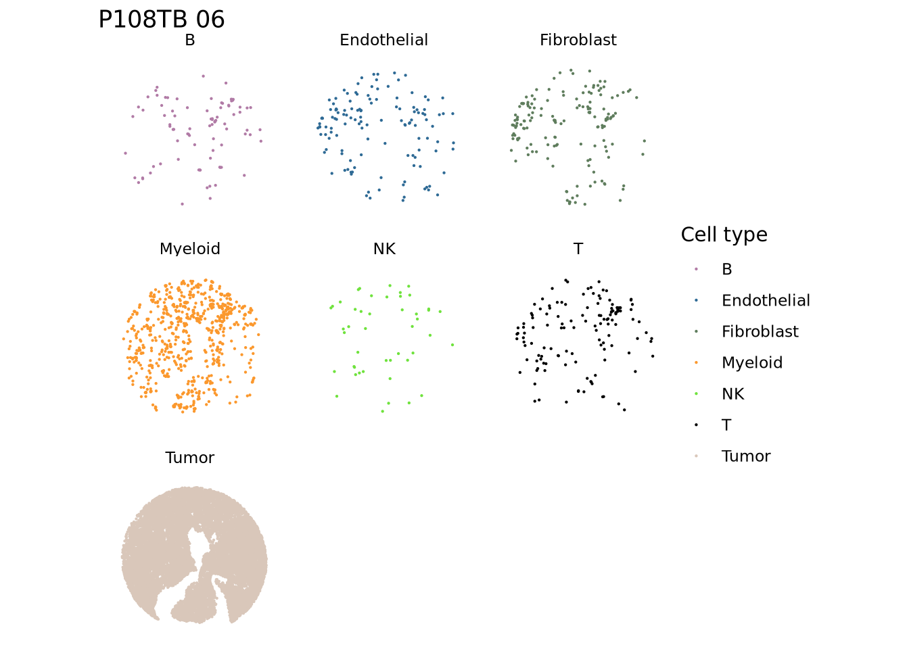
4.13 P108 Puck14
# Remove empty beads
P108TB_14_RNA <- subset(P108TB_14_RNA, subset = area == "Empty", invert = TRUE)Warning: Not validating Seurat objects# Remove non-assigned beads
P108TB_14_assigned <- P108TB_14_RNA@meta.data %>%
filter(!is.na(assignment1))
p14 <- ggplot() +
geom_point(data = arrange(P108TB_14_assigned, assignment1_ord), alpha = 1, aes(x = plot_x, y = plot_y, color = assignment1), size = 0.4) +
celltype_color +
coord_fixed(ratio = 1, xlim = c(0, 5000), ylim = c(0, 5000)) +
theme_void() +
ggtitle("P108TB 14")
p14_sep <- ggplot() +
geom_point(data = arrange(P108TB_14_assigned, assignment1_ord), alpha = 1, aes(x = plot_x, y = plot_y, color = assignment1), size = 0.1) +
celltype_color +
coord_fixed(ratio = 1, xlim = c(0, 5000), ylim = c(0, 5000)) +
theme_void() +
ggtitle("P108TB 14") +
facet_wrap(~assignment1)
p14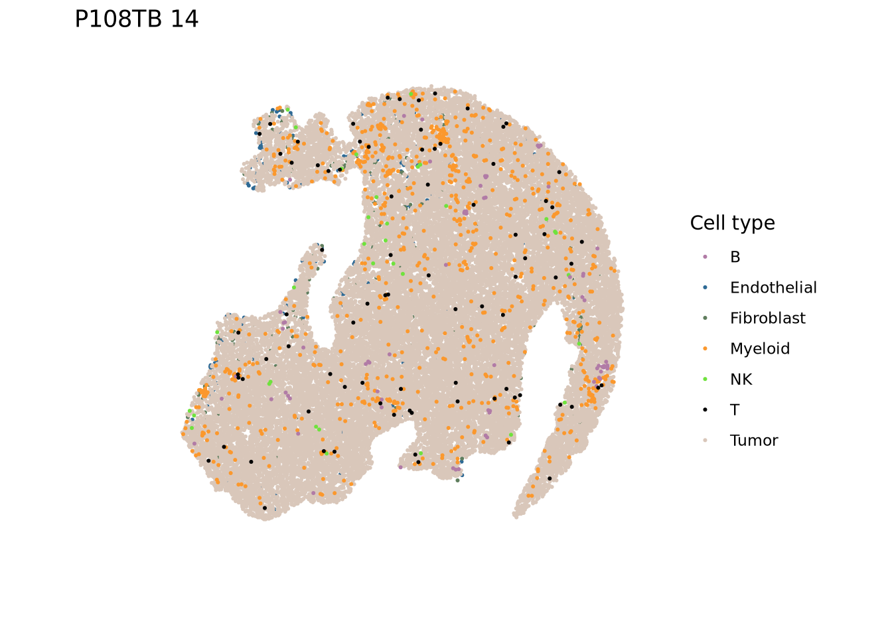
p14_sep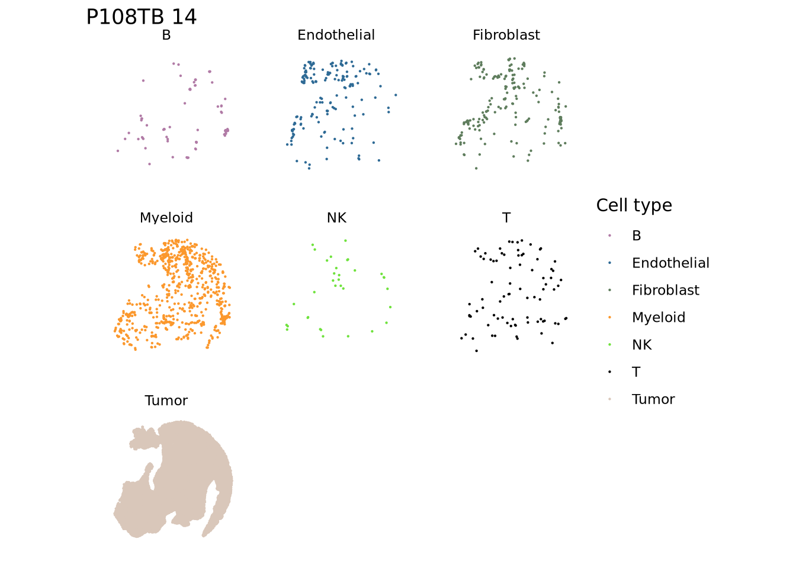
4.14 P109 Puck23
# Remove empty beads
P109TB_23_RNA <- subset(P109TB_23_RNA, subset = area == "Empty", invert = TRUE)
# Remove non-assigned beads
P109TB_23_assigned <- P109TB_23_RNA@meta.data %>%
filter(!is.na(assignment1))
p23 <- ggplot() +
geom_point(data = arrange(P109TB_23_assigned, assignment1_ord), alpha = 1, aes(x = plot_x, y = plot_y, color = assignment1), size = 0.4) +
celltype_color +
coord_fixed(ratio = 1, xlim = c(0, 5000), ylim = c(0, 5000)) +
theme_void() +
ggtitle("P109TB 23")
p23_sep <- ggplot() +
geom_point(data = arrange(P109TB_23_assigned, assignment1_ord), alpha = 1, aes(x = plot_x, y = plot_y, color = assignment1), size = 0.1) +
celltype_color +
coord_fixed(ratio = 1, xlim = c(0, 5000), ylim = c(0, 5000)) +
theme_void() +
ggtitle("P109TB 23") +
facet_wrap(~assignment1)
p23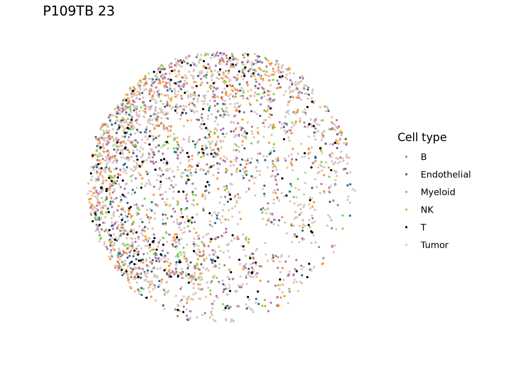
p23_sep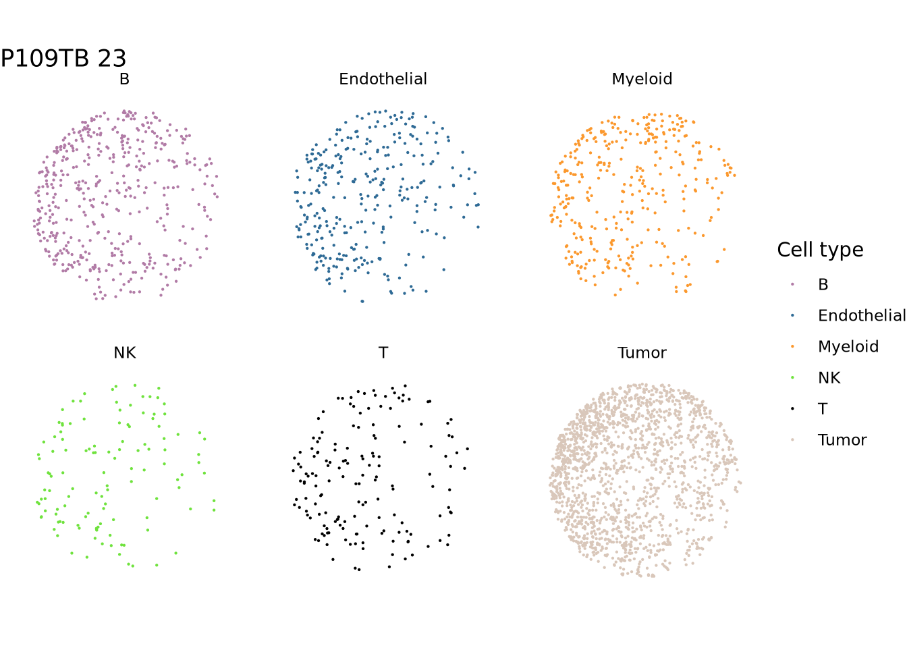
4.15 P109 Puck34
# Remove empty beads
P109TB_34_RNA <- subset(P109TB_34_RNA, subset = area == "Empty", invert = TRUE)
# Remove non-assigned beads
P109TB_34_assigned <- P109TB_34_RNA@meta.data %>%
filter(!is.na(assignment1))
p34 <- ggplot() +
geom_point(data = arrange(P109TB_34_assigned, assignment1_ord), alpha = 1, aes(x = plot_x, y = plot_y, color = assignment1), size = 0.4) +
celltype_color +
coord_fixed(ratio = 1, xlim = c(0, 5000), ylim = c(0, 5000)) +
theme_void() +
ggtitle("P109TB 34")
p34_sep <- ggplot() +
geom_point(data = arrange(P109TB_34_assigned, assignment1_ord), alpha = 1, aes(x = plot_x, y = plot_y, color = assignment1), size = 0.1) +
celltype_color +
coord_fixed(ratio = 1, xlim = c(0, 5000), ylim = c(0, 5000)) +
theme_void() +
ggtitle("P109TB 34") +
facet_wrap(~assignment1)
p34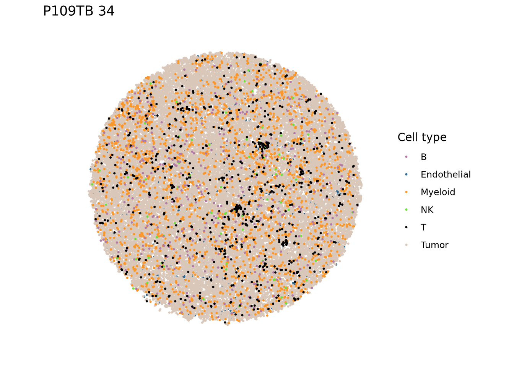
p34_sep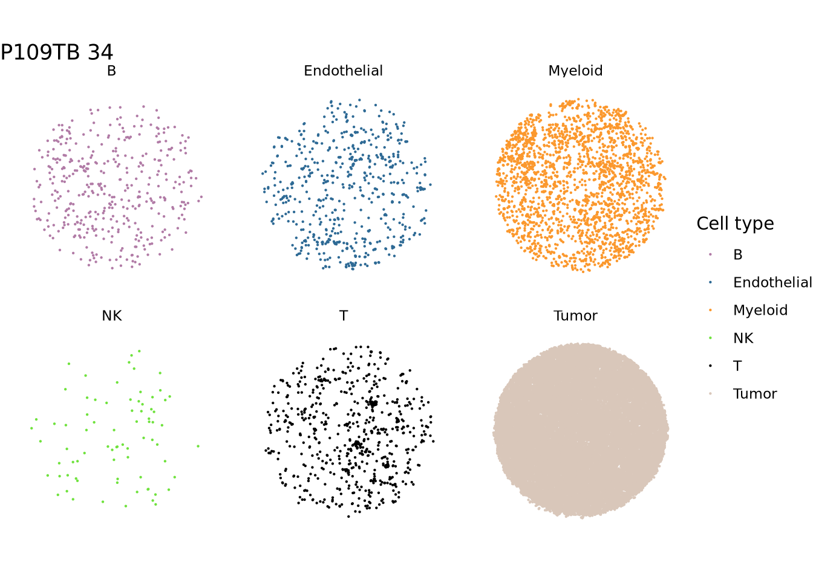
4.16 P110 Puck28
# Remove empty beads
P110TA_28_RNA <- subset(P110TA_28_RNA, subset = area == "Empty", invert = TRUE)Warning: Not validating Seurat objects# Remove non-assigned beads
P110TA_28_assigned <- P110TA_28_RNA@meta.data %>%
filter(!is.na(assignment1))
p28 <- ggplot() +
geom_point(data = arrange(P110TA_28_assigned, assignment1_ord), alpha = 1, aes(x = plot_x, y = plot_y, color = assignment1), size = 0.4) +
celltype_color +
coord_fixed(ratio = 1, xlim = c(0, 5000), ylim = c(0, 5000)) +
theme_void() +
ggtitle("P110TA 28")
p28_sep <- ggplot() +
geom_point(data = arrange(P110TA_28_assigned, assignment1_ord), alpha = 1, aes(x = plot_x, y = plot_y, color = assignment1), size = 0.1) +
celltype_color +
coord_fixed(ratio = 1, xlim = c(0, 5000), ylim = c(0, 5000)) +
theme_void() +
ggtitle("P110TA 28") +
facet_wrap(~assignment1)
p28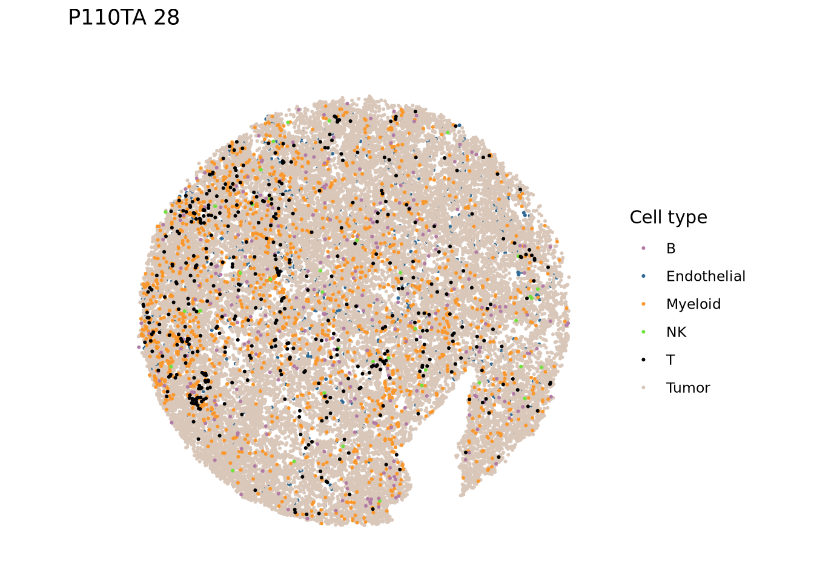
p28_sep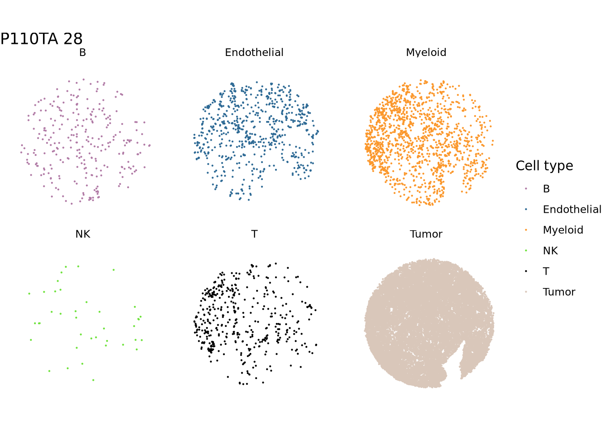
4.17 P110 Puck30
# Remove empty beads
P110TA_30_RNA <- subset(P110TA_30_RNA, subset = area == "Empty", invert = TRUE)Warning: Not validating Seurat objects# Remove non-assigned beads
P110TA_30_assigned <- P110TA_30_RNA@meta.data %>%
filter(!is.na(assignment1))
p110_p30 <- ggplot() +
geom_point(data = arrange(P110TA_30_assigned, assignment1_ord), alpha = 1, aes(x = plot_x, y = plot_y, color = assignment1), size = 0.4) +
celltype_color +
coord_fixed(ratio = 1, xlim = c(0, 5000), ylim = c(0, 5000)) +
theme_void() +
ggtitle("P110TA 30")
p110_p30_sep <- ggplot() +
geom_point(data = arrange(P110TA_30_assigned, assignment1_ord), alpha = 1, aes(x = plot_x, y = plot_y, color = assignment1), size = 0.1) +
celltype_color +
coord_fixed(ratio = 1, xlim = c(0, 5000), ylim = c(0, 5000)) +
theme_void() +
ggtitle("P110TA 30") +
facet_wrap(~assignment1)
p110_p30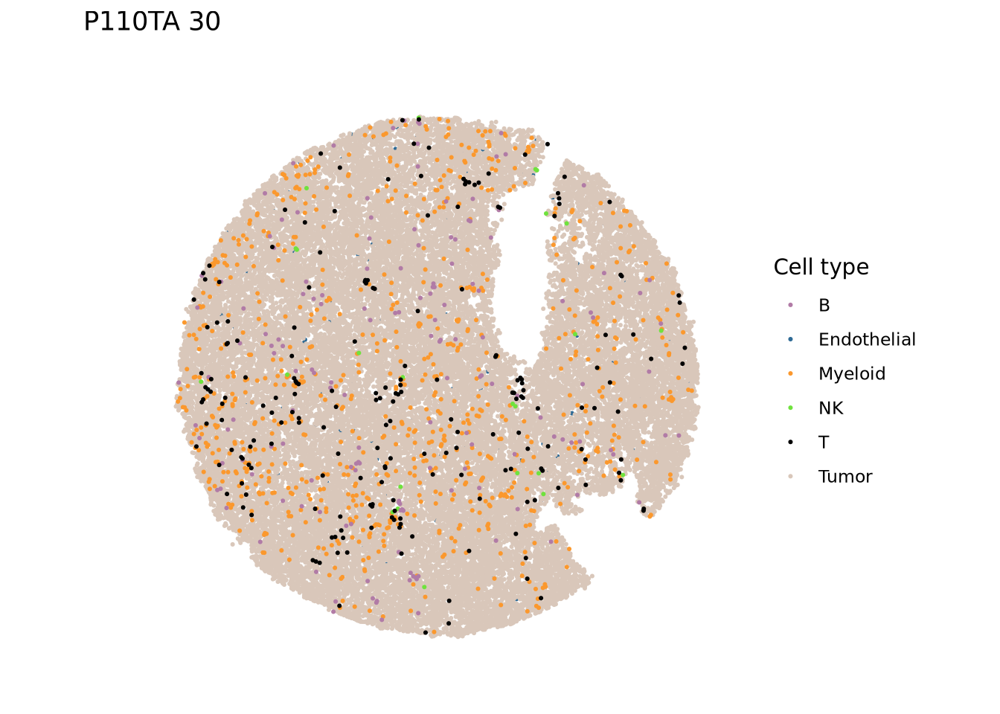
p110_p30_sep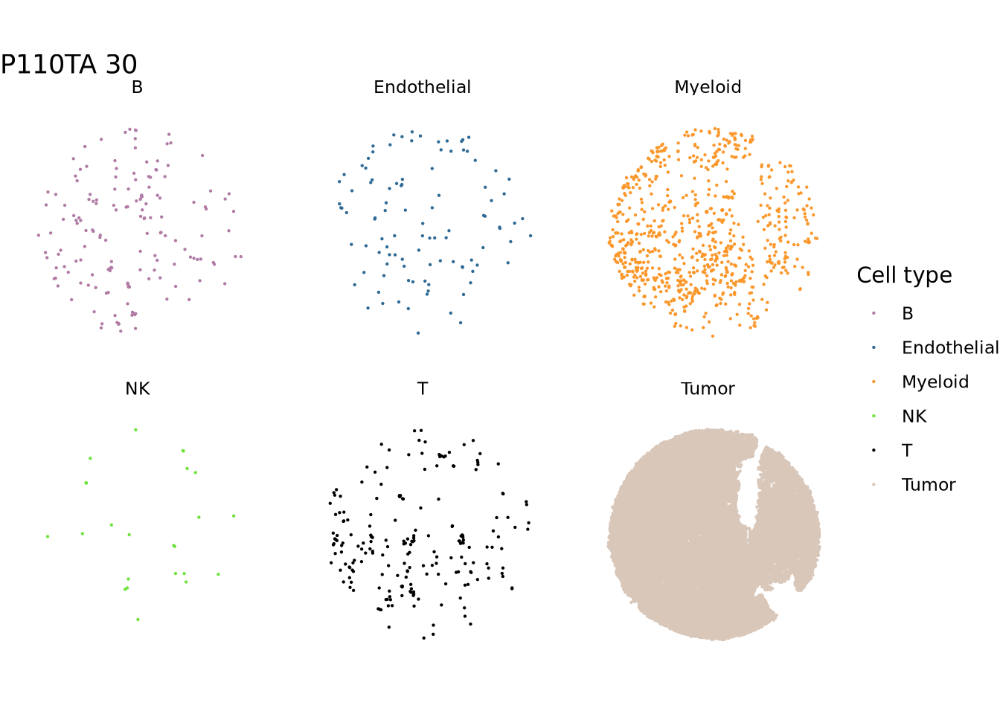
4.18 P111 Puck32
# Remove empty beads
P111TA_32_RNA <- subset(P111TA_32_RNA, subset = area == "Empty", invert = TRUE)Warning: Not validating Seurat objects# Remove non-assigned beads
P111TA_32_assigned <- P111TA_32_RNA@meta.data %>%
filter(!is.na(assignment1))
p111_p32 <- ggplot() +
geom_point(data = arrange(P111TA_32_assigned, assignment1_ord), alpha = 1, aes(x = plot_x, y = plot_y, color = assignment1), size = 0.4) +
celltype_color +
coord_fixed(ratio = 1, xlim = c(0, 5000), ylim = c(0, 5000)) +
theme_void() +
ggtitle("P111TA 32")
p111_p32_sep <- ggplot() +
geom_point(data = arrange(P111TA_32_assigned, assignment1_ord), alpha = 1, aes(x = plot_x, y = plot_y, color = assignment1), size = 0.1) +
celltype_color +
coord_fixed(ratio = 1, xlim = c(0, 5000), ylim = c(0, 5000)) +
theme_void() +
ggtitle("P111TA 32") +
facet_wrap(~assignment1)
p111_p32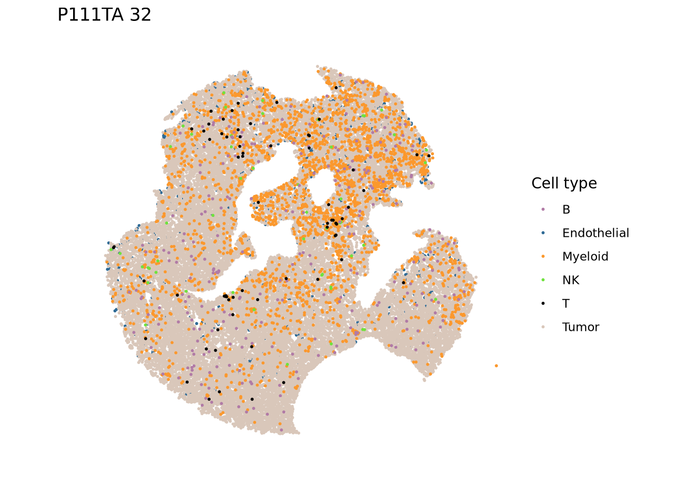
p111_p32_sep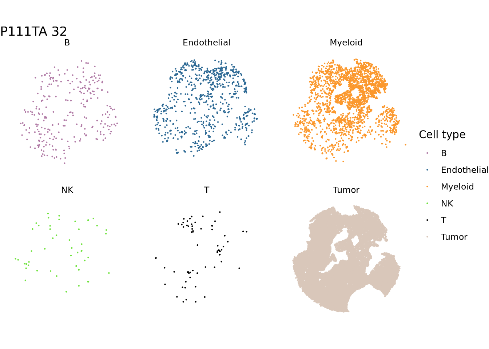
4.19 P111 Puck37
# Remove empty beads
P111TA_37_RNA <- subset(P111TA_37_RNA, subset = area == "Empty", invert = TRUE)Warning: Not validating Seurat objects# Remove non-assigned beads
P111TA_37_assigned <- P111TA_37_RNA@meta.data %>%
filter(!is.na(assignment1))
p37 <- ggplot() +
geom_point(data = arrange(P111TA_37_assigned, assignment1_ord), alpha = 1, aes(x = plot_x, y = plot_y, color = assignment1), size = 0.4) +
celltype_color +
coord_fixed(ratio = 1, xlim = c(0, 5000), ylim = c(0, 5000)) +
theme_void() +
ggtitle("P111TA 37")
p37_sep <- ggplot() +
geom_point(data = arrange(P111TA_37_assigned, assignment1_ord), alpha = 1, aes(x = plot_x, y = plot_y, color = assignment1), size = 0.1) +
celltype_color +
coord_fixed(ratio = 1, xlim = c(0, 5000), ylim = c(0, 5000)) +
theme_void() +
ggtitle("P111TA 37") +
facet_wrap(~assignment1)
p37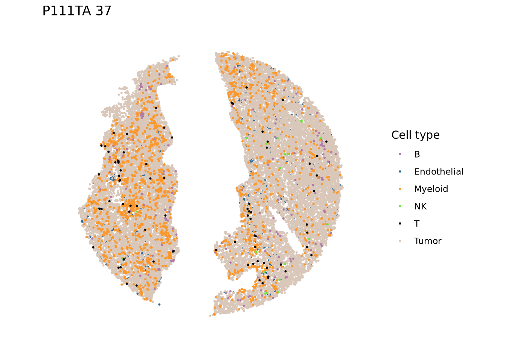
p37_sep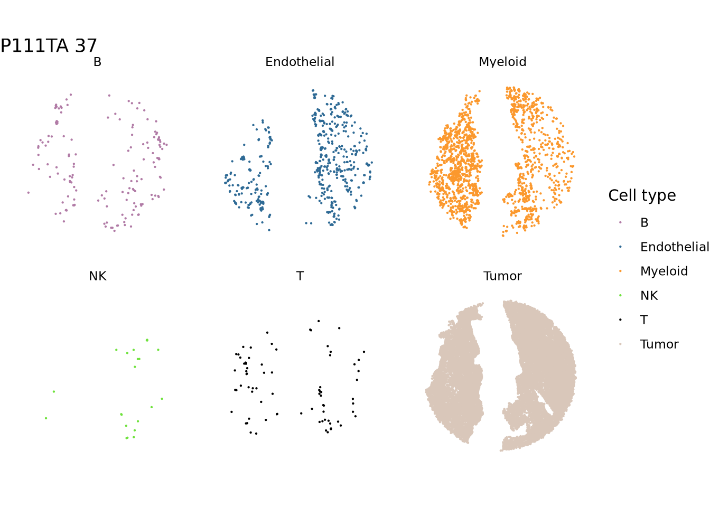
5 Get session info
sessionInfo()R version 4.4.2 (2024-10-31)
Platform: x86_64-pc-linux-gnu
Running under: Red Hat Enterprise Linux 9.5 (Plow)
Matrix products: default
BLAS: /n/app/R/4.4.2-gcc-14.2.0/lib64/R/lib/libRblas.so
LAPACK: /n/app/R/4.4.2-gcc-14.2.0/lib64/R/lib/libRlapack.so; LAPACK version 3.12.0
locale:
[1] LC_CTYPE=en_US.UTF-8 LC_NUMERIC=C
[3] LC_TIME=en_US.UTF-8 LC_COLLATE=en_US.UTF-8
[5] LC_MONETARY=en_US.UTF-8 LC_MESSAGES=en_US.UTF-8
[7] LC_PAPER=en_US.UTF-8 LC_NAME=C
[9] LC_ADDRESS=C LC_TELEPHONE=C
[11] LC_MEASUREMENT=en_US.UTF-8 LC_IDENTIFICATION=C
time zone: US/Eastern
tzcode source: system (glibc)
attached base packages:
[1] stats graphics grDevices utils datasets methods base
other attached packages:
[1] colorblindr_0.1.0 colorspace_2.1-2 viridis_0.6.5 viridisLite_0.4.2
[5] lubridate_1.9.4 forcats_1.0.1 stringr_1.6.0 purrr_1.2.0
[9] readr_2.1.6 tidyr_1.3.1 tibble_3.3.0 ggplot2_4.0.1
[13] tidyverse_2.0.0 spacexr_2.2.1 dplyr_1.1.4 Seurat_5.4.0
[17] SeuratObject_5.3.0 sp_2.2-0
loaded via a namespace (and not attached):
[1] RColorBrewer_1.1-3 rstudioapi_0.17.1 jsonlite_2.0.0
[4] magrittr_2.0.4 spatstat.utils_3.2-0 farver_2.1.2
[7] rmarkdown_2.30 vctrs_0.6.5 ROCR_1.0-11
[10] spatstat.explore_3.6-0 htmltools_0.5.9 sctransform_0.4.2
[13] parallelly_1.46.0 KernSmooth_2.23-26 htmlwidgets_1.6.4
[16] ica_1.0-3 plyr_1.8.9 plotly_4.11.0
[19] zoo_1.8-15 igraph_2.2.1 mime_0.13
[22] lifecycle_1.0.5 iterators_1.0.14 pkgconfig_2.0.3
[25] Matrix_1.7-4 R6_2.6.1 fastmap_1.2.0
[28] fitdistrplus_1.2-4 future_1.68.0 shiny_1.12.1
[31] digest_0.6.39 patchwork_1.3.2 tensor_1.5.1
[34] RSpectra_0.16-2 irlba_2.3.5.1 labeling_0.4.3
[37] progressr_0.18.0 spatstat.sparse_3.1-0 timechange_0.3.0
[40] httr_1.4.7 polyclip_1.10-7 abind_1.4-8
[43] compiler_4.4.2 withr_3.0.2 doParallel_1.0.17
[46] S7_0.2.1 fastDummies_1.7.5 MASS_7.3-65
[49] tools_4.4.2 lmtest_0.9-40 otel_0.2.0
[52] httpuv_1.6.16 future.apply_1.20.1 goftest_1.2-3
[55] glue_1.8.0 nlme_3.1-168 promises_1.5.0
[58] grid_4.4.2 Rtsne_0.17 cluster_2.1.8.1
[61] reshape2_1.4.5 generics_0.1.4 gtable_0.3.6
[64] spatstat.data_3.1-9 tzdb_0.5.0 data.table_1.18.0
[67] hms_1.1.4 spatstat.geom_3.6-1 RcppAnnoy_0.0.22
[70] ggrepel_0.9.6 RANN_2.6.2 foreach_1.5.2
[73] pillar_1.11.1 spam_2.11-3 RcppHNSW_0.6.0
[76] later_1.4.4 splines_4.4.2 lattice_0.22-7
[79] survival_3.8-3 deldir_2.0-4 tidyselect_1.2.1
[82] miniUI_0.1.2 pbapply_1.7-4 knitr_1.51
[85] gridExtra_2.3 scattermore_1.2 xfun_0.54
[88] matrixStats_1.5.0 stringi_1.8.7 lazyeval_0.2.2
[91] evaluate_1.0.5 codetools_0.2-20 cli_3.6.5
[94] uwot_0.2.4 xtable_1.8-4 reticulate_1.44.1
[97] dichromat_2.0-0.1 Rcpp_1.1.1 globals_0.18.0
[100] spatstat.random_3.4-3 png_0.1-8 spatstat.univar_3.1-5
[103] parallel_4.4.2 dotCall64_1.2 listenv_0.10.0
[106] scales_1.4.0 ggridges_0.5.7 rlang_1.1.6
[109] cowplot_1.2.0